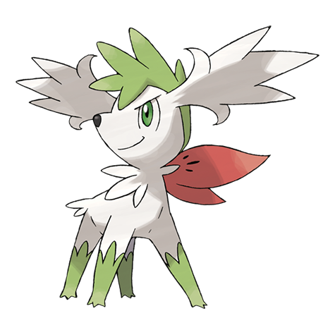
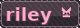

I'm a java developer with 3 years of experience, im also good with server configuration
I mostly work on plugins, but I'm running out of ideas sooooo, website!
A bit about me: My favourite anime is the seven deadly sins, Overall i've watched alot of animes, My favourite pokemon is shaymin, my favourite colours are (light) blue and orange!
💙
